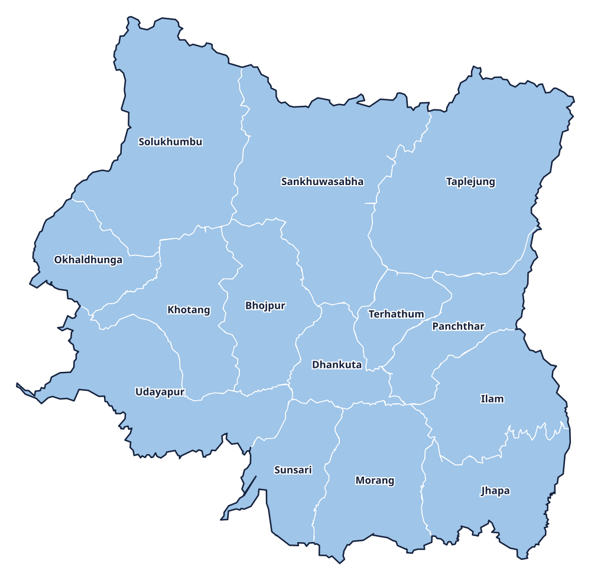

Province 1 · प्रदेश 1
Koshi Province
कोशी प्रदेश

Provincial information
Capital: Biratnagar (विराटनगर)
Districts: 14
District directory
Select a district to view its profile, find news coverage, and browse local links.
Province 1 · प्रदेश 1
कोशी प्रदेश

Capital: Biratnagar (विराटनगर)
Districts: 14
Select a district to view its profile, find news coverage, and browse local links.